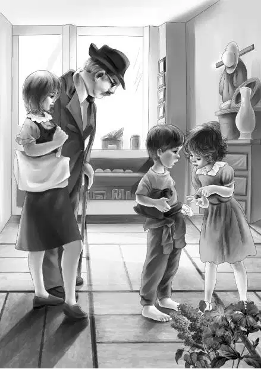

Chapter 2 Being Watched
第二天，奥登一家采取了行动，开始对伊丽莎白港进行深入地了解。
他们步行来到小商店，发现这里几乎可以买到所有食品——于是女孩们买了至少可以吃上两天的食物。接着，班尼向芬顿先生问道：“悬崖上的大庄园里住的究竟是谁呢？”
“这个……”芬顿先生回答道，“是格雷女士——伊丽莎白·格雷，她是他们家族里的最后一名成员。”
“她一个人住那么大的房子？”班尼叫了起来。
“不，也不算是一个人，有个女佣替她做饭，还有个男仆帮她修剪草坪，冬天还帮着她铲雪。格雷女士没有家人，那房子是她爷爷盖的，曾经有12个孩子在那里出生并长大，不过有的去世，有的离开了。她现在孑然一身，据说在写书。”
“那她一定很孤单。”杰西说，“她平时出门吗？”
“不出去。”芬顿先生摇了摇头，“她几乎从不出去，也从没有人去探望。她性格内向，不太合群。格雷女士很有钱，也为镇子做了很多贡献，那栋校舍就是她爷爷建的，并且取名为伊丽莎白·格雷学校——那是以他的妻子，也就是格雷女士奶奶的名字命名的。格雷女士每到秋天就会去打扫校舍，钥匙也在她的手里。不过，她向来都是独来独往的。”

“我真为她感到难过。”班尼说道，“她肯定错过了好多乐趣。”
孩子们和旅馆老板聊得正兴起，一个红头发男孩和一个红头发女孩同时走了进来——他们长得很像，一看就是双胞胎。
两个孩子根本没朝奥登一家看上一眼，而是把头转向了另外一侧。
“他们准是之前就见过我们。”班尼心想。
“我们要买点面粉。”男孩说，“我妈说，还要再买些茶叶。”他的声音很粗，整个人看起来也很粗鲁。女孩也是一样，头发扎成了几绺，在脸旁耷拉下来。
女孩仔细地点着钱，她的动作很慢，似乎数起来很困难，好在芬顿先生帮了她一把。两个孩子离开后，芬顿先生说道：“说实话，奥登先生，我真替这里长大的孩子难过。在这座岛上，生活本来就很艰难，加上村民们又没受过教育，孩子们根本没有机会换种方式生活。他们没看过电视，也没见过杂志，更没离开过小岛。”
“噢，天呐。”杰西叹道，“这么说，他们肯定对外面的世界一无所知。”
“是啊。”芬顿先生说，“他们一到年龄，就要到沙丁鱼罐头厂去工作。刚才那两个是莫斯家的双胞胎，只要工厂开门，他们就要过去工作。”
“可他们至少也能赚些钱啊！”班尼说道。
芬顿先生微微一笑，说：“看来，你还真不了解岛上的人。孩子们是从来都见不到钱的——当爸爸的会把钱拿走，然后藏起来。他们很少花钱，所有人都会尽可能地把钱存起来——不过不是存在银行里，而是放在一只旧袜子里。”
“这种做法好奇怪啊。”班尼说，“这样会弄丢的。”
芬顿先生笑了笑：“是啊，当然有这个可能，不过有时候他们也不见得只会受损！说来有趣，去年夏天，有个奇怪的人来到这儿，花了十美元，从莫斯先生那买走了一枚25美分的旧硬币，那人还给了我三美元，想从我这儿买走一个便士的旧硬币，不过我才不信他呢。”
听到这话，爷爷顿时来了兴趣。“那人叫什么名字？”他问道。
“弗莱·维尔利先生。”芬顿先生说，“他说过，今年夏天还会来的。”
“要是真的来了，我倒想见见他。”奥登先生说道。
“准会见着的。”芬顿先生说，“只要他在村子里晃悠，大家都可以见到他。当然，我不得不说，他这人很友善。”
杰西把买食品的钱付给了芬顿先生，并且感谢他为大家讲了岛上的事情，亨利和班尼则争先恐后地跑回旅馆放食物去了。
“想象一下吧，假如咱们住在这座小岛上，对其他事情一无所知，会是什么样子？”维莉说道。
“我可想象不出来。”杰西说，“不过那女孩不太会数钱倒是情理之中的。”
两个男孩回来后，四个孩子一起去了海滩。奥登先生这次没有跟去。他还有几封信要写。
孩子们沿着海边一路走着，只听维莉说道：“我有种奇怪的感觉——村里的人好像都在盯着咱们看。”
“我也感觉到了。”班尼说，“还有，周围怎么看不到男的？我只看到了小孩和女人，一个男人也没看见。这儿不是应该住着很多渔民吗？他们都到哪儿去了？”
亨利四下里看了看，“说得没错，班尼，之前我还真没注意到。不过答案我可能已经知道了——如果村里的男人全都是渔民的话，那他们一定是驾船出海了。”
“咱们去码头看看吧。”班尼说道。
海滩上到处都是人。
有大大小小的孩子，也有妈妈们。少男少女们坐在沙滩上结着渔网，手里不停地打着结，动作非常熟练。奥登一家经过时，他们连头都没有抬一下。
孩童们在海水里嬉戏着，像鱼儿一般自由自在地游着泳，有些男孩还从码头上直接跳下去，一头扎进深水里。
“潜到水下你不害怕吗？”班尼问其中一个小男孩。
“不怕，我喜欢这么玩，每次我都能游上来。”男孩似乎觉得奇怪，不明白为什么会有人问这种问题。
“一看就知道你游泳很棒。”班尼说，“你从生下来就开始游泳了吧？”
亨利大笑起来：“这里的孩子肯定都会游泳——也许一学会走路就会游了。”
杰西微微一笑，冲着一个结网的女人打了声招呼，女人极不耐烦地答应一声，目光飞快地转开了。
孩子们回家吃午饭时，杰西对爷爷说：“村子里的人一点儿都不友好。”
“没错。”奥登先生说，“他们对陌生人不太信任——之前我见过这种情况。”
班尼皱起了眉头，“是不是咱们什么地方做错了？”
“那倒没有，”奥登先生安慰道，“只能说，人与人之间的相处方式不同——你们得习惯这一点。”
“可就算是这样，他们至少应该笑一笑吧？”班尼说。
“你们是不是想回家了？”爷爷答非所问。
“不想！现在还不想！”四个孩子齐声叫着，全都笑了起来。他们已经一致决定，不会就此放弃。
爷爷的脸上露出了笑容，看到孩子们面对难题仍然这样执着，他感到很欣慰。
幸好孩子们没有听到大家的议论。
自从他们来到这儿，岛上的人就开始悄悄地观察着他们。
一个女孩说：“他们都是有钱人家的孩子，傲慢得很！看看他们的衣服，我敢说，那两个女孩从来不用干活。”
大人们则说：“避暑的游客！这种人我们见多了！他们花钱真大方，要是给我们一半就好啦！”
“那辆车里还有空调呢！”一个年纪稍大的男孩说道，“他们就是来炫耀的。”
这时，孩子们的妈妈开了口：“我可不觉得他们傲慢，也不觉得他们在炫耀。人家见人就笑，很友好，你们不过是嫉妒罢了。”
的确，岛上的孩子们很想跟奥登家的孩子们一样，不用整日干活。他们时常艳羡地看着这几个孩子，听着他们在镇里转悠时的说笑声。
不过，随着时间的推移，这种情况渐渐发生了改变。大家渐渐喜欢起奥登一家来，他们认为这几名游客很和善。岛上的孩子很想跟他们交朋友，但谁也不知道该如何开口。